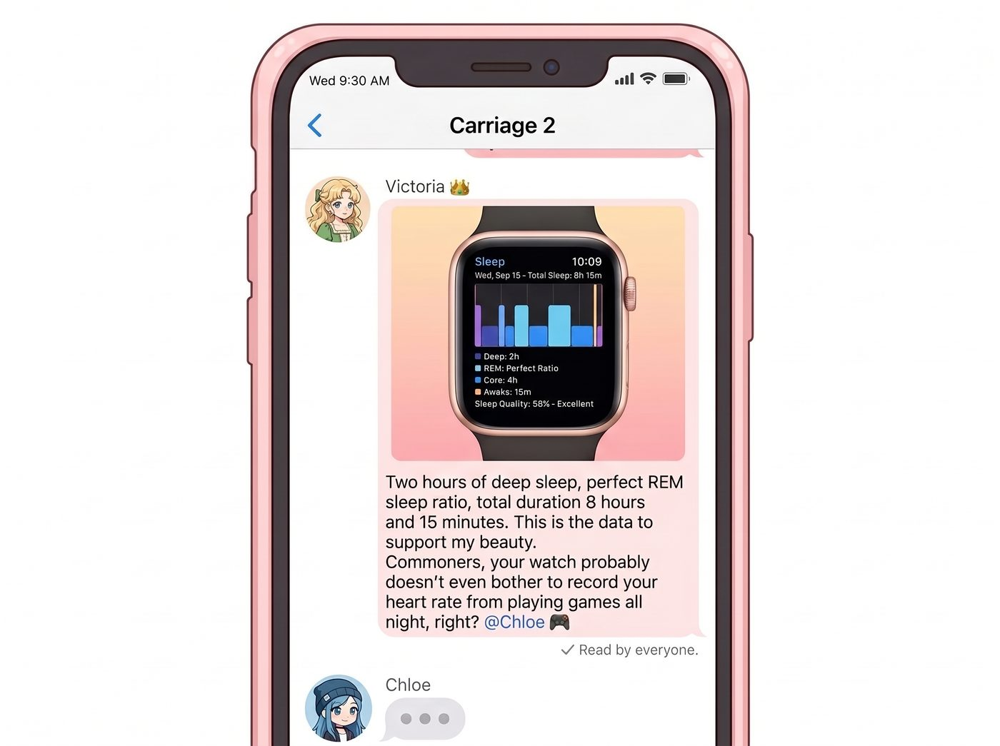

賽博教導主任

庫克生態系的恐怖之處，不在於它榨乾你的錢包，而在於當你把 iPhone、AirPods 和 Apple Watch 徹底綁定後，你的生活就不可避免地被納入了一套極度精密、甚至帶點強迫症的數位健康審計系統。
事情的起因，是 Victoria 為了炫耀她新買的 Apple Watch 聯名款。某個週三早晨，名媛在群組裡發送了一張截圖，上面顯示著她完美的睡眠分析圖表。
「深睡 2 小時，REM 睡眠比例完美，總時長 8 小時 15 分鐘。」Victoria 附上了一句充滿優越感的文字，「這就是保持美貌的數據支撐。平民們，妳們昨晚熬夜打遊戲的心率，手錶應該都懶得記錄吧？」
她本想藉此嘲諷昨晚通宵打遊戲的 Chloe，但她萬萬沒想到，截圖這個動作，不小心觸發了健康 App 裡所有被隱藏的「溫馨提醒」權限。
一、庫克式規訓
接下來的 24 小時，Victoria 經歷了一場賽博折磨。
下午兩點，Victoria 正舒舒服服地躺在沙發上敷著面膜，手腕突然傳來一陣震動：「該站起來囉！請稍微活動一下。」
十分鐘後，手錶再次震動：「您今天還有三個小時的站立目標尚未達成。」
下午五點，Victoria 剛吃完一塊高熱量的馬卡龍，手機和手錶同時發出清脆的「叮」聲，跳出一張殘酷的趨勢圖：「您今天的活動圓環進度嚴重落後。」
名媛徹底崩潰了。她一把扯下手錶，在群組裡發出了歇斯底里的語音訊息：「Lily！！妳是不是駭進了我的帳號？！為什麼我的手錶說話的語氣跟妳一模一樣？！」
幾秒鐘後，群組裡彈出了 Lily 慢條斯理的文字回覆：「Victoria 學姐，我並沒有駭入您的設備。您的 Apple Watch 只是在執行一套完美的生理審計程序。另外，請您現在立刻去林道上快走兩公里。」
二、連鎖反噬
被科技巨頭背刺的不只有 Victoria。
Max 本來正戴著耳機，舒舒服服地躲在降噪結界裡聽著後搖滾。突然，音樂音量被強制壓低，Siri 的聲音突兀地切入：「音量過高。您本週暴露在 85 分貝以上音量的時間已超過安全限制。為了保護您的聽力，音量已自動調低。」
Max 默默地拿下耳機，覺得自己不僅失去了一首好歌的高潮部分，還被一個虛擬的勞工安全檢查員開了一張罰單。
而一直嘲笑她們被消費主義洗腦、堅持不戴智慧型手錶的 Chloe，也沒有逃過這場數位審計。
當天晚上，Chloe 剛因為打遊戲被翻盤而氣得在客廳裡大吼大叫時，Max 的手錶突然發出了尖銳的警報聲。螢幕上顯示著：「家庭成員心率異常警告：Chloe 的心率在非運動狀態下突然飆升至 135 BPM，請確認她是否需要醫療協助。」
Chloe 愣在原地，臉頰瞬間漲得通紅：「這破玩意兒為什麼連我生氣都要管？！」
在這個被雨水困住的奧林匹亞半島車廂裡，科技巨頭的演算法終於讓她們意識到，一旦踏入這個生態系，就相當於花大價錢給自己請了一個全天候的賽博教導主任——它不會倒轉時間，但它絕對會在你偷懶不走路時，毫不留情地給你發送一封紅色的警告信。